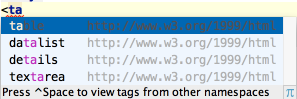

A special variant of the Code Completion feature invoked by pressing &shortcut:CodeCompletion; twice allows you to complete XML tag names from namespaces not declared in the current file. If the namespace is not declared yet the declaration is generated automatically.
